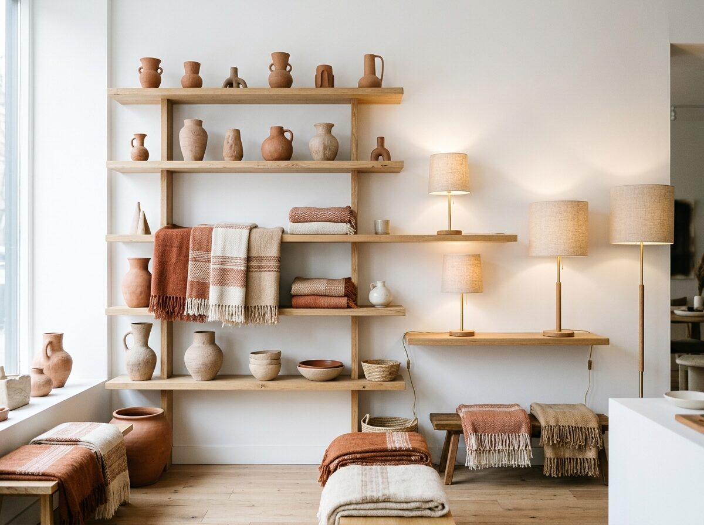
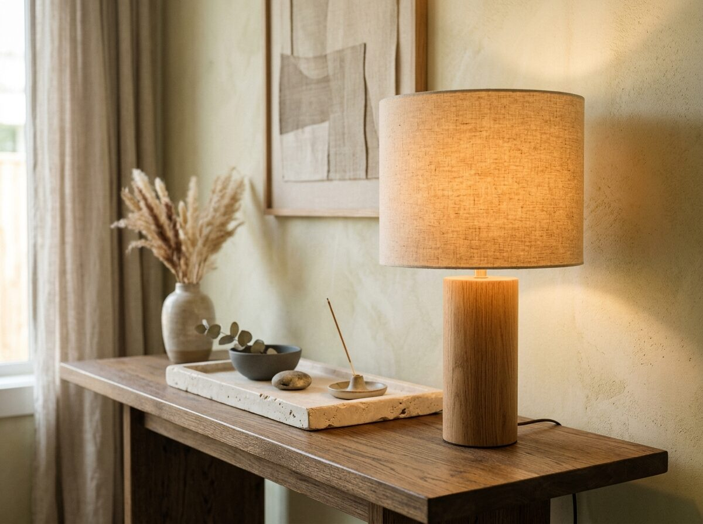
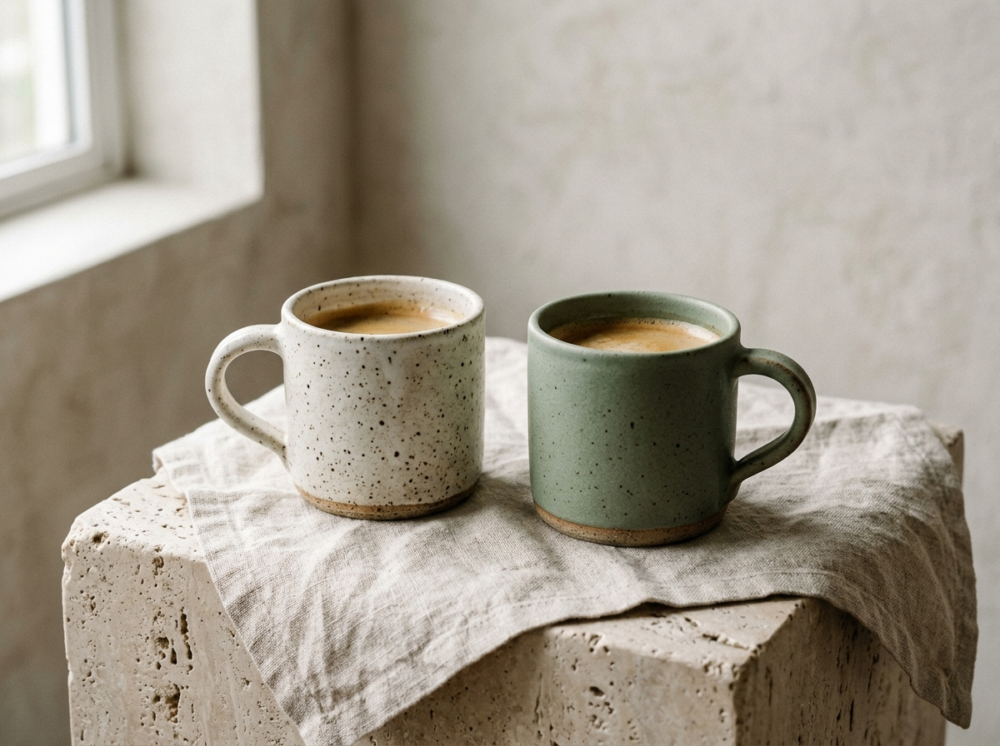
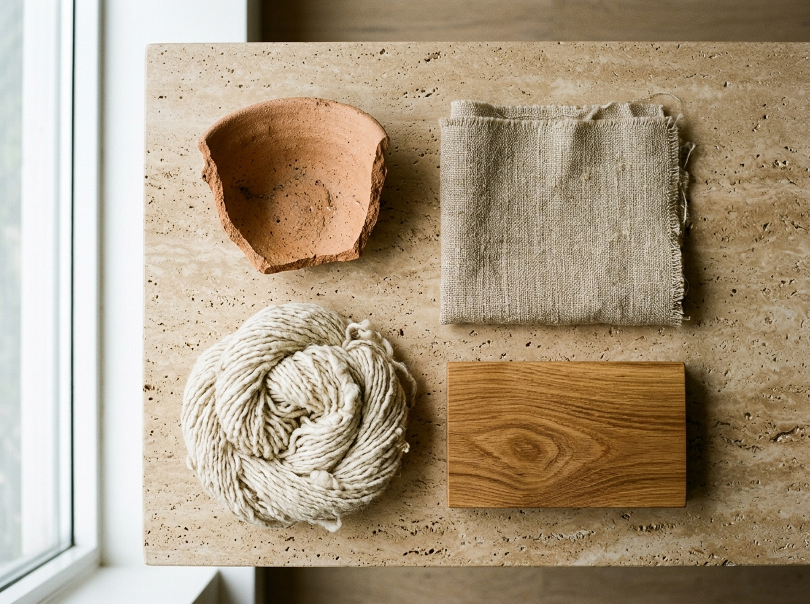
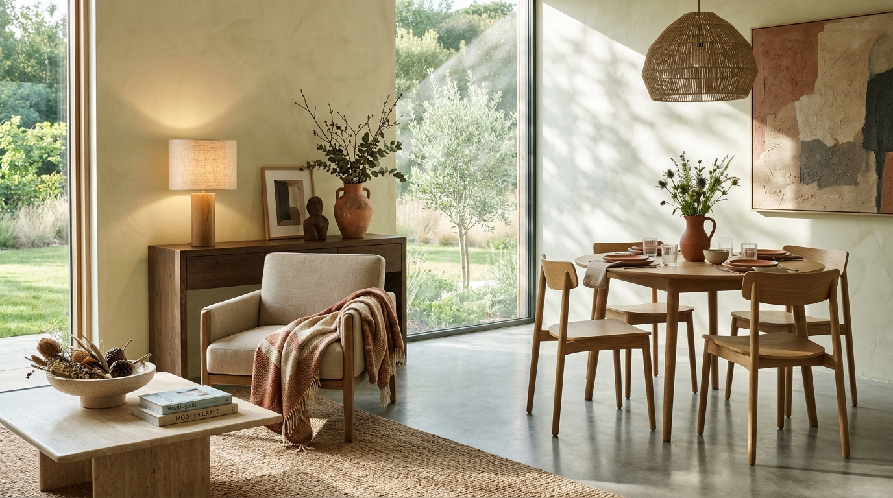

Entrega urbana referencial
Coordinación directa en Cuenca mediante mensajería o retiro acordado una vez confirmada la lista por WhatsApp.
Objetos de diseño & hogar · Demostración en Cuenca
Mercado Serrano es una tienda curatorial ficticia diseñada por AV·STUDIO. Demuestra cómo exhibir colecciones de hogar con precios transparentes en USD, ficha rápida sin salir del catálogo y lista de pedido asistida por WhatsApp.



01 · Tienda interactiva de ejemplo (USD)
Mostrando 6 piezas de ejemplo · Selecciona «Ver ficha» para consultar detalles sin salir del catálogo.
02 · Consulta rápida en detalle

03 · Diseño y materia
Cada pieza de esta demostración prioriza superficies honestas que envejecen con nobleza: acabados minerales porosos, tramas tejidas visibles y maderas tratadas sin laca plástica.
04 · Integración en espacio real
Cómo dialogan juntas la iluminación cálida, los textiles andinos y la cerámica sobre superficies neutras. Agrega cualquier objeto de la escena directamente a tu selección.

05 · Cobertura y atención demostrativa
Esta sección ejemplifica cómo presentar condiciones transparentes de entrega, tiempos estimados y atención personalizada antes de activar un cobro en línea.
Al tratarse de una demostración de AV·STUDIO, los precios en USD, inventario y modalidades de despacho sirven como muestra visual para tiendas y talleres que deseen lanzar su propio catálogo digital.
Coordinación directa en Cuenca mediante mensajería o retiro acordado una vez confirmada la lista por WhatsApp.
Posibilidad de ilustrar tarifas por ciudad o embalaje reforzado para cerámica e iluminación en todo el Ecuador.
No procesa tarjetas ni genera órdenes reales; si tu negocio requiere pasarela de pagos e inventario sincronizado, se integra a medida.
06 · Solución web comercial AV·STUDIO
Desarrollamos catálogos rápidos con filtros reales, fichas expandibles, montos en USD y conexión directa a WhatsApp o futuras pasarelas de pago.